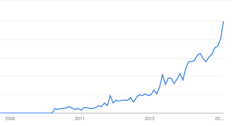

MQTT
Homematic Usertreffen 2015
Sebastian Raff https://github.com/hobbyquaker
Buzzwords
Schlagwörter, Anglizismen, Abkürzungen
Was ist MQTT?
“MQTT (formerly Message Queue Telemetry Transport) is a publish-subscribe based "light weight" messaging protocol for use on top of the TCP/IP protocol. It is designed for connections with remote locations where a "small code footprint" is required and/or network bandwidth is limited. The Publish-Subscribe messaging pattern requires a message broker. The broker is responsible for distributing messages to interested clients based on the topic of a message. Andy Stanford-Clark and Arlen Nipper authored the first version of the protocol in 1999.”
“The specification does not specify the meaning of "small code foot print" or the meaning of "limited network bandwidth". Thus, the protocol's availability for use depends on the context. In 2013 IBM submitted MQTT v3.1 to the OASIS specification body with a charter that ensured only minor changes to the specification could be accepted. MQTT-SN is a variation of the main protocol aimed at embedded devices on non-TCP/IP networks, such as ZigBee.”
Zusammengefasst
-
Messaging nach dem Publish/Subscribe Entwurfsmuster
Clients "subscriben" bestimmte Topics und erhalten alle Nachrichten die andere Clients auf diesen Topics "publishen". -
Benötigt Message Broker
Clients verbinden sich mit dem Broker, dieser empfängt und sendet Nachrichten von und zu den Clients. -
Light-Weight
Einfach gehaltenes Protokoll, geringer Overhead, kompakte Implementierungen. MQTT-SN für embedded Anwendungen ohne TCP/IP. -
Offener Standard
Client Implementierungen seit 2011 Open Source, seit 2014 OASIS Standard
Google Trends
Wer "macht" MQTT?
Eclipse Open Source Projekte
Unternehmen
-
IBM
-
MessageSightBroker Hardware Appliance
- WebSphere MQBroker Software, kommerziell (Binaries für Windows und Linux. C/C++ und Java Client-Libs)
- rsmb
"Really small message broker" - MQTT-SN Broker Software, für embedded Devices (Open Source im Eclipse Mosquitto Projekt)
-
MessageSight
-
dc-square GmbH
-
HiveMQBroker Software (Java). Kostenlose Variante für nicht-kommerziellen Einsatz mit Limitierung auf 25 Clients.
- MQTT Web ClientFreie Software, Apache 2.0 Lizenz
-
HiveMQ
Wer nutzt MQTT?
- Soziale Netzwerke (Facebook)
Messenger und Chat.”By maintaining an MQTT connection and routing messages through our chat pipeline, we were able to often achieve phone-to-phone delivery in the hundreds of milliseconds, rather than multiple seconds.”
[7] - Ölversorger (IBM)
Satellitengestütztes Sensornetz für Ölpipelines, 30.000 Sensoren, 17.000km Pipeline, Anbindung an SCADA, Billing, ... [5] [6] - Medizintechnik (St. Jude Medical)
Überwachung und Fernwartung von mehr als 100.000 Herzschrittmachern. [8]
Was kann MQTT?
Topics
-
Topics können hierarchisch strukturiert werden, als Trennzeichen dient der Schrägstrich. Beispiel:
Sensoren/Garten/Temperatur -
Beim abbonieren ("subscriben") von Topics können die Wildcards # (Multilevel, nur am Ende zugelassen) und + (ein Level) verwendet werden. Beispiele:
Sensoren/# Sensoren/+/Temperatur +/Garten/+
Persistente Nachrichten - Retain
Clients können den Broker veranlassen die letzte Nachricht eines Topic "aufzubewahren", sobald ein Client dieses Topic abboniert erhält er diese Nachricht.
QOS - Quality of Service
MQTT kennt 3 QOS Levels:
- QOS 0: At most once - Fire and Forget. Subscriber erhalten Nachricht höchstens 1x
- QOS 1: At least once - Acknowledged delivery. Subscriber erhalten Nachricht mindestens 1x
- QOS 2: Exactly once - Assured delivery. Subscriber erhalten Nachricht genau 1x
Last Will - Testament
Ein Client kann beim Verbinden mit dem Broker einen "letzten Willen" abgeben, diese Nachricht wird auf einem bestimmten Topic veröffentlicht sobald die Verbindung zwischen Client und Broker unterbrochen wird.
Sicherheit
- Username/Passwort Authentifierzung, Broker können Authentifizierungs Plugins nutzen.
- MQTT über TCP/IP und MQTT über Websockets kann mit TLS (SSL) gesichert werden.
- ACLs für Publish und Subscribe auf Topic Ebene. (Broker-spezifisch, kein Teil des MQTT-Standards)
Zusammengefasst
-
Messaging nach dem Publish/Subscribe Entwurfsmuster
Clients "subscriben" bestimmte Topics und erhalten alle Nachrichten die andere Clients auf diesen Topics "publishen". -
Benötigt Message Broker
Clients verbinden sich mit dem Broker, dieser empfängt und sendet Nachrichten von und zu den Clients. -
Light-Weight
Einfach gehaltenes Protokoll, geringer Overhead, kompakte Implementierungen. MQTT-SN für embedded Anwendungen ohne TCP/IP. -
Offener Standard
Client Implementierungen seit 2011 Open Source, seit 2014 OASIS Standard -
Etabliert, bewährt, weit verbreitet
Enterprisetauglich, sehr ausgereifte Software, weit verbreitet, starke Open Source Community.
Was kann ich mit MQTT machen?
Dinge verbinden!
Smarthome Software
ioBroker, OpenHAB, CCU.IO, FHEM, ...Node-RED
"A visual tool for wiring the Internet of Things"Open Source (EPL)

OwnTracks
"allows you to keep track of your own location."- Open Source, Android, iOS
- kostenlos im App Store und Play Store erhältlich
mqtt-smarthome
Quellen, Links
- MQTT.org
- MQTT Version 3.1.1 OASIS Standard
- mosquitto.org
- paho - Open Source messaging
- Impact 2014 - Introduction to the IoT protocol, MQTT - Peter Niblett, IBM Senior Technical Staff Member
- IoTLive 2014 - Push! - MQTT for the Internet of Things - Dominik Obermaier
- Building Facebook Messenger, Lucy Zhang, 2011
- IBM Solutions Connect 2014 - Alles miteinander verbinden, Voraussetzung für das Internet der Dinge, M2M und Industrie 4.0 - Renate Franken, IBM Deutschland GmbH
- owntracks.org
- www.nodered.org
- mqtt-smarthome